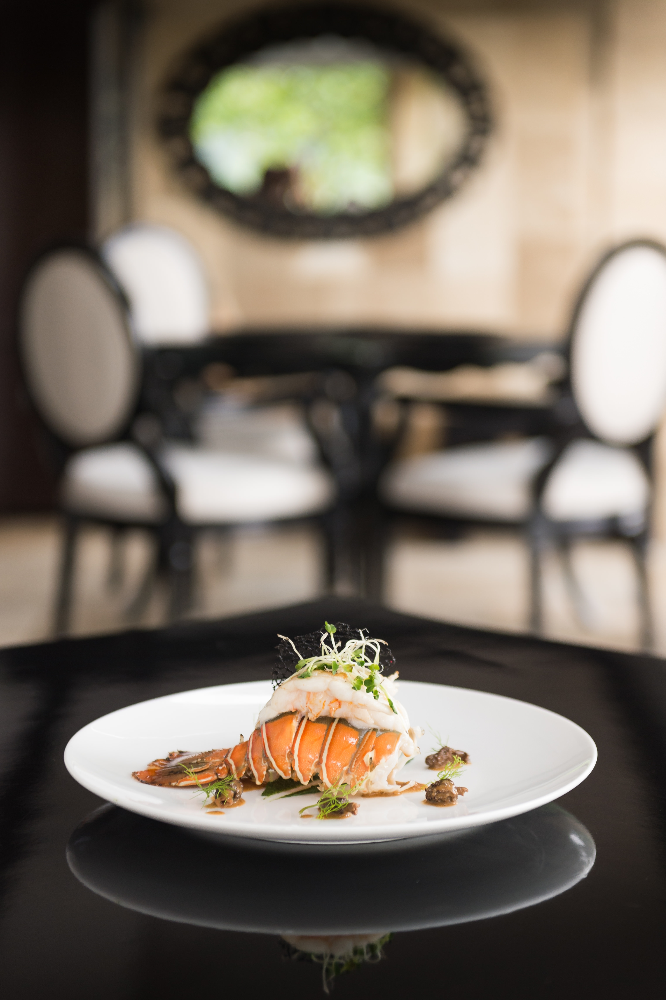
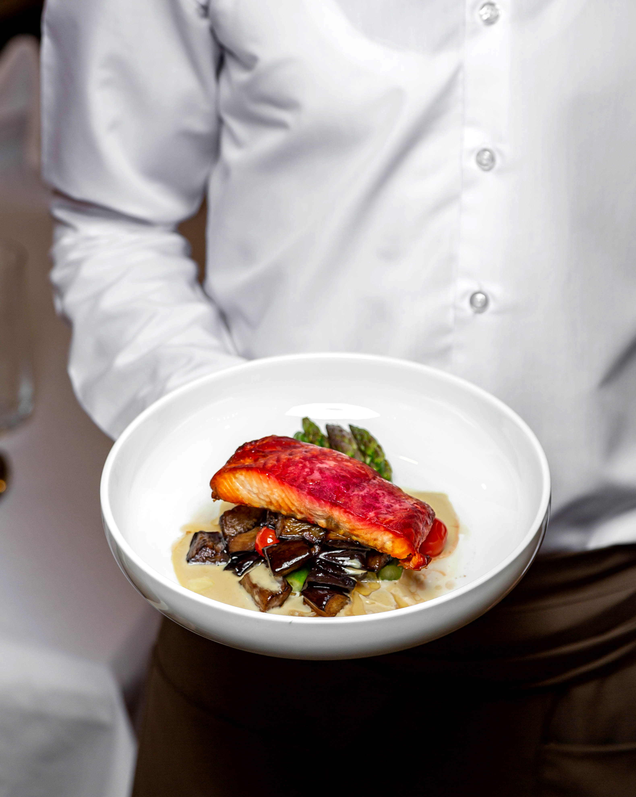

Carte Dégustation
Entrée
Salade de chèvre chaud accompagnée de noix caramélisées et vinaigrette au miel.
Plat
Aubergines frites enveloppées de noix.
Dessert
Délice au chocolat noir accompagné d’un sorbet à la framboise.
Parimis propose une expérience culinaire inoubliable. Avec un chef étoilé au guide, le menu met en avant des plats gastronomiques préparés à partir d'ingrédients locaux et de saison. L'ambiance élégante, avec des vues panoramiques sur la ville, crée un cadre parfait pour un dîner romantique ou une célébration spéciale. Les sommeliers sont à votre disposition pour vous conseiller sur une sélection de vins soigneusement choisis pour accompagner chaque plat.
Salade de chèvre chaud accompagnée de noix caramélisées et vinaigrette au miel.
Aubergines frites enveloppées de noix.
Délice au chocolat noir accompagné d’un sorbet à la framboise.
Croustillant de crevette servi avec une émulsion de citron vert.
Pigeon rôti avec une réduction de vin rouge, servi avec des légumes racines.
Assiette de fromages affinés accompagnée de fruits secs et de pain.


Carpaccio de betterave avec fromage de chèvre frais, noisettes et vinaigrette balsamique.
Saumon frit en sauce servi avec frites de légumes
Soufflé au Grand Marnier servi avec une crème anglaise.